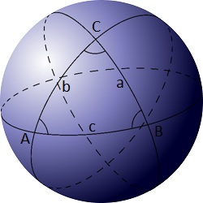

A spherical triangle is a figure formed on the surface of a sphere by three great circular arcs intersecting pairwise in three vertices.

Let $C(r)$ be the sphere with the centre $(0,0,0)$ and radius $r$.
Let $Z(r)$ be the set of points on the surface of $C(r)$ with integer coordinates.
Let $T(r)$ be the set of spherical triangles with vertices in $Z(r)$.
Degenerate spherical triangles, formed by three points on the same great arc, are not included in $T(r)$.
Let $A(r)$ be the area of the smallest spherical triangle in $T(r)$.
For example $A(14)$ is $3.294040$ rounded to six decimal places.
Find $\sum \limits_{r = 1}^{50} A(r)$. Give your answer rounded to six decimal places.
solve(max_limit=5) → ?solve(max_limit=50) → ?solve(max_limit=100) → ?